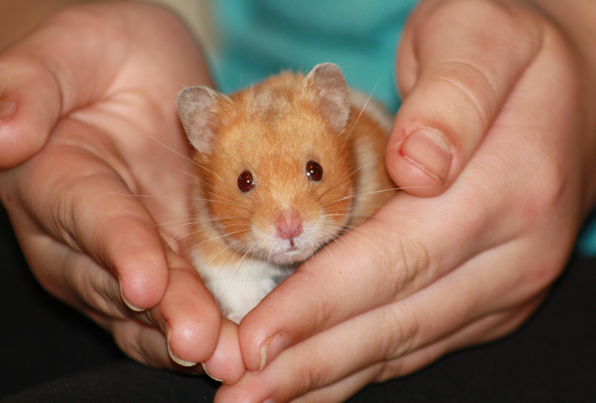

11-Jun-2017 | Milku
Our soap is the best.
It's Day 11 of 30 Days Wild and we put the Japanese streamer that we made yesterday outdoors. It isn't too windy in Blackpool today. We'll have to wait for the breeze to get stronger before our creation looks great.
Two of my humans decided to make soap today, using rose petals and rosemary that they'd grown in the garden.
I think they cheated a bit by grating a white, unscented block of soap and melting that with some water. But even that took a long time.
While the soap was melting in a bowl over a pan of boiling water, they chopped up some rose petals and rosemary leaves. Nice smell, but it didn't look too good.
They had to be quick filling the moulds as the soap mixture went hard quite quickly when they stopped stirring it. But eventually they completed the task.
It didn't take long before the soap mixture was solid and they could take the pieces of soap out of the moulds. I think they should have considered using a bit of colour as it doesn't look too inspiring.
But if it keeps my humans clean and makes them smell a bit better, I'm all in favour of them using it.
